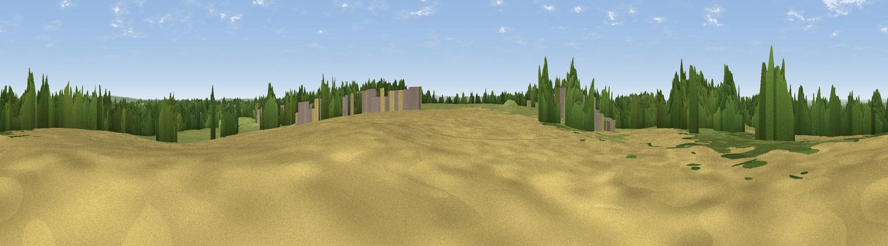

Essington Hill
#33088 in England · top 64% of its area beats it · near EssingtonWhere it is
The exact computed spot (SJ 95646 04007). Click the marker for map links.
The view, rendered

A 360° render of this exact spot computed from the terrain model, tree cover and land cover — summer colours, afternoon light, calibrated against photographs of famous viewpoints. Real trees, hedges and buildings will differ in detail.
The panorama
Grey silhouette: terrain skyline in each direction (720 bearings, Earth curvature and refraction included). Dashed green: skyline with trees (+15 m) and buildings (+8 m) as obstacles. Blue strip: how far the ground is visible on each bearing.
Where the view opens
Wedge length = distance to the farthest visible ground on that bearing (vegetation-aware). Rings at 10, 25 and 50 km.
What fills the view
33% grassland · 33% woodland · 22% cropland · 11% built-up
Angular shares of the visible panorama (visual magnitude), not map area. Landscape diversity 0.58 (0–1 Shannon).
Key numbers
More beautiful places nearby
The staircase of upgrades: each row has a higher view potential than everything closer. Driving times are estimates from straight-line distance, calibrated against real road routing — check an actual route before setting out.
| Place | Direction | Drive | Score |
|---|---|---|---|
| Viewpoint near Hilton | NW · 1 km | ~3 min | 53.3 |
| Viewpoint near Featherstone | W · 1 km | ~4 min | 58.8 |
| Viewpoint near Cannock | NE · 6 km | ~13 min | 59.0 |
| Viewpoint near Huntington | N · 9 km | ~18 min | 60.2 |
| Wimblebury Hill | NE · 10 km | ~19 min | 62.0 |
| Viewpoint near Gospel End | SSW · 12 km | ~23 min | 62.3 |
| Viewpoint near Streetly | ESE · 12 km | ~23 min | 69.5 |
| Viewpoint near Clent | S · 24 km | ~39 min | 73.8 |
52.63379, -2.06577 · source: osm peak · position refined by local search. Computed location — check access rights before visiting.